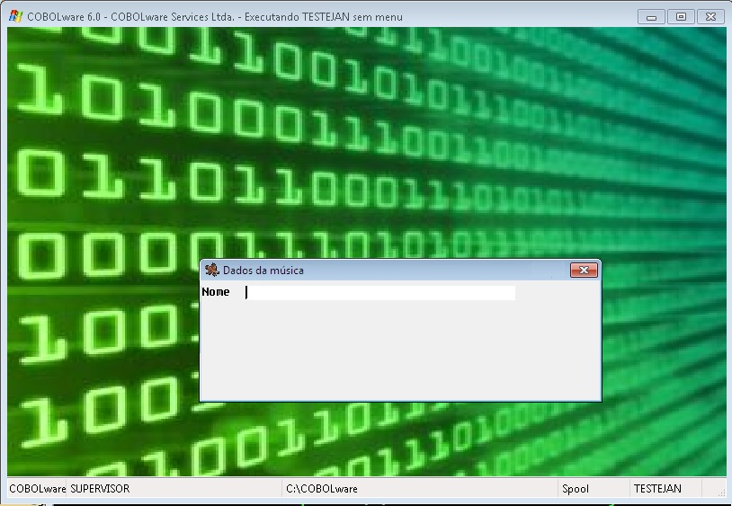
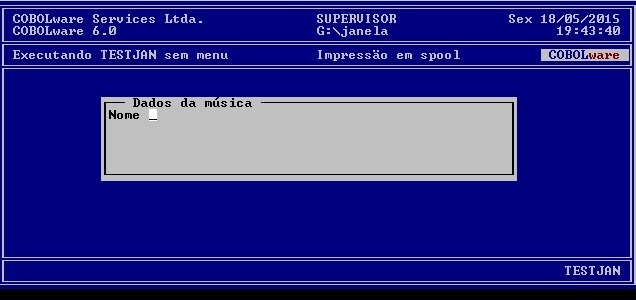

Tratamento de janelas.
Window REFERENCE código
CLOSE
| OPEN
[
TITLE mensagem
]
[ LINE linha
]
[ COLUMN coluna
]
[ SIZE largura
]
[ LINES altura
]
[ COLOR código-da-cor
]
Campo
de 2 bytes que recebe a identificação criada para a
janela no momento do OPEN
e
informa qual janela deve ser fechada no ocasião do
CLOSE.
CLOSE
Fecha
a janela referenciada em código.
OPEN
Abre,
ativa a janela e informa a referencia para CLOSE.
mensagem
Título da janela de até 78 caracteres.
Linha de posicionamento da janela.
Coluna de posicionamento da janela.
Largura
Tamanho horizontal da
janela.
Altura
Tamanho vertical da janela.
Indica o código da cor (CWNCOR.CPY) a ser usada na janela.
A acentuação do título deve ser codificada com a página de código 850, os processadores de tela se encarregam de traduzir para o codificação apropriada a plataforma de execução:
|
Codificação COBOL |
|
EXEC COBOLware
Window OPEN |
|
Efeito no modo gráfico |
|
 |
|
Efeito no modo texto |
|
 |